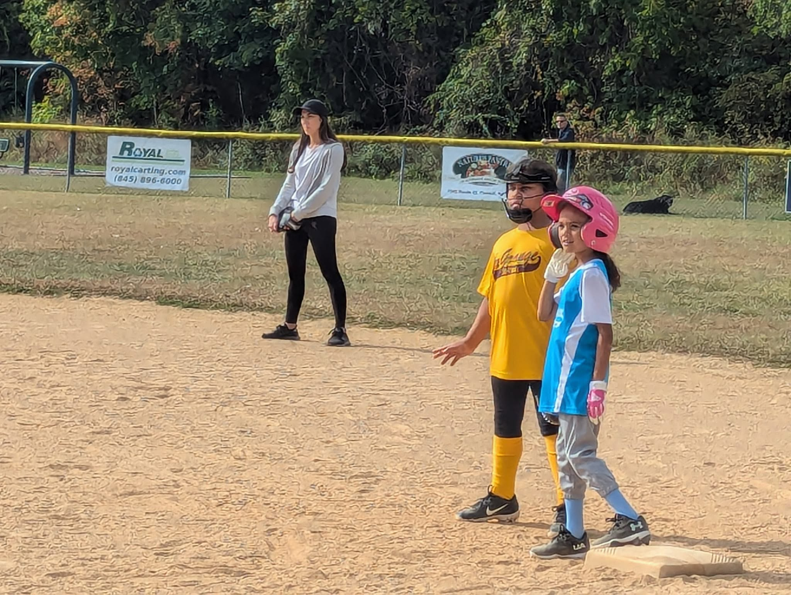

A Tradition of Softball
Fishkill Little League Softball continues a tradition that spans generations of players throughout Southern Dutchess.

Fishkill Little League Softball offers instruction, competition, teamwork, and leadership opportunities for girls ages 5 through 16.
Players develop softball fundamentals while building confidence and friendships that last beyond the season.
Fishkill Little League Softball continues a tradition that spans generations of players throughout Southern Dutchess.